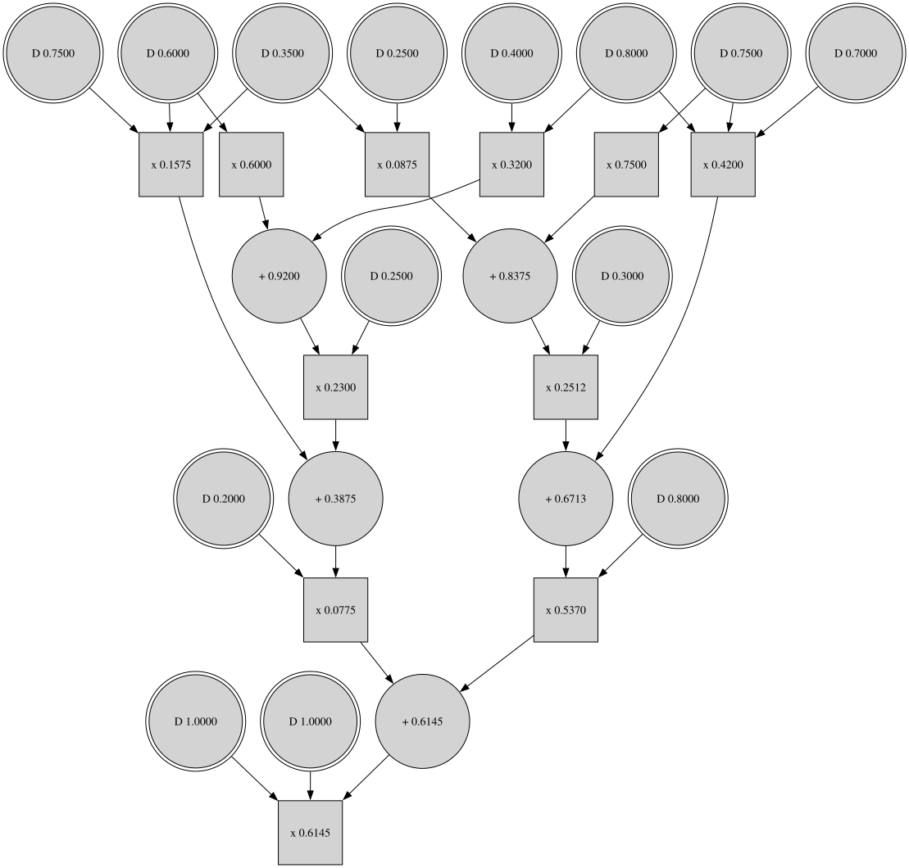

Introduction
Schlandals is a state-of-the-art Projected Weighted Model Counter specialized for probabilistic inference over discrete probability distributions. Currently, there are known modelization for the following problems
- Computing the marginal probabilities of a variable in a Bayesian Network
- Computing the probability that two nodes are connected in a probabilistic graph
- Computing the probability of ProbLog programs
For more information on how to use Schlandals and its mechanics, check the documentation (still in construction). You can cite Schlandals using the following bibtex entry
@InProceedings{dubray_et_al:LIPIcs.CP.2023.15,
author = {Dubray, Alexandre and Schaus, Pierre and Nijssen, Siegfried},
title = {{Probabilistic Inference by Projected Weighted Model Counting on Horn Clauses}},
booktitle = {29th International Conference on Principles and Practice of Constraint Programming (CP 2023)},
pages = {15:1--15:17},
series = {Leibniz International Proceedings in Informatics (LIPIcs)},
ISBN = {978-3-95977-300-3},
ISSN = {1868-8969},
year = {2023},
volume = {280},
editor = {Yap, Roland H. C.},
publisher = {Schloss Dagstuhl -- Leibniz-Zentrum f{\"u}r Informatik},
address = {Dagstuhl, Germany},
URL = {https://drops.dagstuhl.de/opus/volltexte/2023/19052},
URN = {urn:nbn:de:0030-drops-190520},
doi = {10.4230/LIPIcs.CP.2023.15},
annote = {Keywords: Model Counting, Bayesian Networks, Probabilistic Networks}
}
Installation
Before installing Schlandals, be sure to have the rust toolchain installed.
From source (recommended)
We assume that the commands are ran from CURRENT_DIR
git clone git@github.com:aia-uclouvain/schlandals.git && cd schlandals && cargo build --release
ln -s $CURRENT_DIR/schlandals/target/release/schlandals $HOME/.local/bin
This compiles the code in release mode (with optimizations included) and add a symbolic links to the local binaries directory.
Using Cargo
Note that the code is still actively developed and it should not be expected that the version of the code on crates.io is the most up-to-date. The main branch of Schlandals should be stable enough for most use cases.
cargo install schlandals
This will put the schlandals executable in ~/.cargo/bin/
Building Schlandals with Torch support
Schlandals supports learning parameters using Torch tensors.
We use the tch-rs crate for the bindings with libtorch tensors and this feature can be installed by
adding --features tensor as a flag to the install (cargo install schlandals --features tensor) or build (cargo build --release --features tensor) commands.
Note that this requires to have libtorch install on your system and some environment variables set. For more information, see tch install page.
Modelization
In this section, we describe how to encode problems in Schlandals. We first give the theoretical foundations to understand these encodings, and then each sub-section shows how to encode a specific problem. We currently have encodings (or translations) for
A Restricted Propositional Logic Language
Schlandals works on propositional formulas in Conjunctive Normal Form (CNF) containing only Horn clauses. In Horn clauses, at most one literal has a positive polarity. For example, \( \lnot x \lor \lnot y \lor z \) is a valid Horn clause as only \( z \) has a positive polarity. Using the logical equivalence \( (A \implies B) \Leftrightarrow (\lnot A \lor B) \), Horn clauses are implications with potentially empty consequences.
Let \( F \) be a Horn formula over variables \( \mathcal{X} \). In Schlandals, the variables are partitioned into two sets \( \mathcal{P} \) and \( \mathcal{Y} \). The set \( \mathcal{Y} \) of variables contains classical boolean variables (deterministic variables), while the set \( \mathcal{P} \) includes the variables associated with the distributions (probabilistic variables). Let us assume that \( n \) distributions are defined for the problem. Then, \( \mathcal{P} = \cup_{i = 1}^n D_i \) with \( D_i \cap D_j = \emptyset \) for all \( i \neq j \). Moreove, every variable \( v \in D \) has a weight \( P(v) \) and \( \sum_{v \in D_i} P(v) = 1 \).
Let \( I = \mathbf{x} \) be an assignment to the variables \( \mathcal{X} \). We say that \( I \) is an interpretation of \( F \), and it is a model if \( F[I] = \top \) (i.e., evaluating \( F \) with the values in \( I \) reduce to true). In Schlandals, there is an additional constraint: a model \( I \) is valid only if it sets exactly one variable to \( \top \) per distribution.
If we denote \( v_i \) the value set to \( \top \) in distribution \( D_i \), the weight of a model \( I \) can be computed as \[ \omega(I) = \prod_{i = 1}^n P(v_i) \] If \( \mathcal{M} \) denotes the set of models of \( F \), then the goal is to compute \[ \sum_{I \in \mathcal{M}} \omega(I) \].
A Modified DIMACS Format
Schlandals reads its inputs from a modified DIMACS format.
It follows the same rules as the DIMACS format, with an additional rule for the distributions (and it ignores the lines starting with c p weight used in other weighted model counters).
Below is an example of a modified DIMACS file
p cnf 16 11
c Lines starting with `c` alone are comments.
c The first line must be the head in the form of "p cnf <number variable> <number clauses>
c The distributions are defined by lines starting with "c p distribution"
c Each value in a distribution is assigned to a variable, starting from 1. Hence, the first N variables
c are used for the distributions.
c p distribution 0.2 0.8
c p distribution 0.3 0.7
c p distribution 0.4 0.6
c p distribution 0.1 0.9
c p distribution 0.5 0.5
c Finally, the clauses are encoded as in DIMACS.
11 -1 0
12 -2 0
13 -11 -3 0
13 -12 -5 0
14 -11 -4 0
14 -12 -6 0
15 -13 -7 0
15 -14 -9 0
16 -13 -8 0
16 -14 -10 0
-12 0
Modelizing Bayesian Networks
Let \( B \) be a Bayesian Network over variables \( \mathcal{V} = {V_1, \ldots, V_n} \). As of now, Schlandals can handle queries of the type \( P(V_i = v) \) (for any \( v \) of \( V_i \)'s domain)). Notice that by rewriting queries of the type \( P(V_i = v \mid E = e) \) as the quotient of two marginal probabilities, Schlandals can also solve conditional probability queries. As an example, below is a Bayesian network with four variables.

Notice that our encoding is very similar to WMC encodings. For more informations about the WMC encodings used in our experiments, see [1,2]
The Variables
As explained in here, we need two types of variables: probabilistic and deterministic. Probabilistic variables are denoted \( \theta \) and use the following terminology. The variable \( \theta_v^{u_1, \ldots, u_p} \) is used for the CPT entry of node \( V \) associated with value \( v \) and parents' value \(u_1, \ldots, u_p \). In the example above, there are two probabilistic variables for node \( A \), \( \theta_{a_0}, \theta_{a_1} \). On the other hand, node B has four probabilistic variables \( \theta_{b_0}^{a_0},\theta_{b_1}^{a_0}, \theta_{b_0}^{a_1}, \theta_{b_1}^{a_1} \). Moreover, the partitioning in distribution follows the structure of the Bayesian Networks; every line in a given CPT constitutes a distribution. In the example, we have \( D_1 = {\theta_{a_0}, \theta_{a_1} }, D_2 = {\theta_{b_0}^{a_0}, \theta_{b_1}^{a_0}}, D_3 = {\theta_{b_0}^{a_1}, \theta_{b_1}^{a_1}}, \ldots \). Finally, we have one deterministic variables \( \lambda_v \) for each value \( v \) of node \( V \).
The intuition is that the variables \( \lambda_v \) represent whether or not node \( V \) takes that particular value. On the other hand, the \( \theta_{v}^{p_1, \ldots, p_n} \) variables are used to give the correct weight to the interpretations.
The Clauses
While similar in WMC encodings, the clauses contain one significant difference. For each CPT entry of node \( v \), associated with value \( v \) and parents value \( p_1, \ldots, p_n \), we have the clause \[ \lambda_{p_1} \land \ldots \land \lambda_{p_n} \land \theta_{v}^{p_1, \ldots, p_n} \implies \lambda_{v} \]
The Query
Let \( V \) have domain \( v_1, \ldots, v_m \). Then, to encode the query \( P(V = v_i) \), we add the clauses \( \lnot v_i \) for all \( i \neq j \).
Example
The encoding (in DIMACS-style format) is show below for the query \( P(D = d_0) \). Notice that the probailistic variables start at 1 and are in contiguous blocks. The
p cnf 26 19
c Probabilistic variables 1 2
c p distribution 0.2 0.8
c Probabilistic variables 3 4
c p distribution 0.6 0.4
c Probabilistic variables 5 6
c p distribution 0.3 0.7
c Probabilistic variables 7 8
c p distribution 0.25 0.75
c Probabilistic variables 9 10
c p distribution 0.75 0.25
c Probabilistic variables 11 12
c p distribution 1.0 0.0
c Probabilistic variables 13 14
c p distribution 0.35 0.65
c Probabilistic variables 15 16
c p distribution 0.8 0.2
c Probabilistic variables 17 18
c p distribution 0.0 1.0
c CPT for A. Variable for a_0 = 19, a_1 = 20
-1 19 0
-2 20 0
c CPT for B. Variable for b_0 = 21, b_1 = 22
-3 -19 21 0
-4 -19 22 0
-5 -20 21 0
-6 -20 22 0
c CPT for C. Variable for c_0 = 23, c_1 = 24
-7 -19 23 0
-8 -19 24 0
-9 -20 23 0
-10 -20 24 0
c CPT for D. Variable for d_0 = 25, d_1 = 26
-11 -21 -23 25 0
-12 -21 -23 26 0
-13 -21 -24 25 0
-14 -21 -24 26 0
-15 -22 -23 25 0
-16 -22 -23 26 0
-17 -22 -24 25 0
-18 -22 -24 26 0
c Query
-26 0
References
[1] Mark Chavira and Adnan Darwiche. On probabilistic inference by weighted model counting. Artificial Intelligence, 172(6-7), 2008.
[2] Anicet Bart, Frédéric Koriche, Jean-Marie Lagniez, and Pierre Marquis. An improved CNF encoding scheme for probabilistic inference. In Proceedings of the Twenty-second European Conference on Artificial Intelligence, 2016.
Modelizing Probabilistic Graph
Let \( G = (V, E) \) be a graph (undirected or directed) such that each edge \( e \in E \) is present in the graph with a probability \( p(e) \). Given a source \( s \) and a target \( t \) the goal is to compute the probability that \( s \) and \( t \) are connected. Below is an example of such graph, with five nodes and a query would be to compute the probability that \( A \) and \( E \) are connected. Our encoding is the same as the one presentend in [1] except for the distribution. Notice that the encoding also works for undirected graphs.

The Variables
One distribution is defined for each edge \( e \in E \) with \( D_e = \theta_{e}, \theta_{\lnot e} \) representing, respectively, that the edge is present or not. In addition to that, each node \(v \in V \) has an associated deterministic variable \( \lambda_{v} \) that is true if the node \( v \) is reachable from the source, given the choices on the edge variables.
The Clauses
The encoding uses the transitivity property of the graph: If a node \(v_1 \in V \) is reachable from the source and the edge \( e = (v_1, v_2) \in E \) is present, then \(v_2\) is reachable from the source. That means that for every edge \(e = (v_1, v_2) \in E\), there is a clause \[ \lambda_{v_1} \land \theta_{e} \implies \lambda_{v_2} \]
The Query
The query is encoded by imposing the fact that the source \( s \) is reachable from the source, and the target \( t \) is not: \( \lambda_{s} \) and \( \lnot \lambda_{t} \).
Example
The encoding (in DIMACS-style format) is show below for the query \( P(A \text{ connected to } E) \).
p cnf 26 19
c Edge from A to B with variables 1 2
c p distribution 0.4 0.6
c Edge from A to C with variables 3 4
c p distribution 0.8 0.2
c Edge from B to D with variables 5 6
c p distribution 0.5 0.5
c Edge from C to D with variables 7 8
c p distribution 0.6 0.4
c Edge from C to E with variables 9 10
c p distribution 0.7 0.3
c Edge from D to E with variables 11 12
c p distribution 0.3 0.7
c Deterministic variables: Node A 13 Node B 14 node C 15 Node D 16 Node E 17
-13 -1 14 0
-13 -3 15 0
-14 -5 16 0
-15 -7 16 0
-15 -9 17 0
-16 -11 17 0
c Query
13 0
-17 0
References
[1] Leonardo Duenas-Osorio, Kuldeep Meel, Roger Paredes, and Moshe Vardi. Counting-based reliability estimation for power-transmission grids. In Proceedings of the AAAI Conference on Artificial Intelligence, 2017.
Probabilistic Inference
Schlandals provides exact and \( \epsilon \)-bounded approximate inference methods. It can be used either as a DPLL-style search-based solver or as a compiler that outputs an arithmetic circuit. Beware that, currently; the compiler is just a search-solver saving its trace. Hence, you should use the search solver if you do not need to keep the circuits for further computation.
Search-based Inference
The search-based inference algorithm is a modified DPLL search that branches over the distributions and has specialized propagation for Horn clauses. For a complete description of the algorithm, see [1].
As an example, let use the Bayesian Network from the encoding page, which encoding is shown below (assuming it is saved in a file name bn.cnf)
p cnf 26 19
c p distribution 0.2 0.8
c p distribution 0.6 0.4
c p distribution 0.3 0.7
c p distribution 0.25 0.75
c p distribution 0.75 0.25
c p distribution 1.0 0.0
c p distribution 0.35 0.65
c p distribution 0.8 0.2
c p distribution 0.0 1.0
-1 19 0
-2 20 0
-3 -19 21 0
-4 -19 22 0
-5 -20 21 0
-6 -20 22 0
-7 -19 23 0
-8 -19 24 0
-9 -20 23 0
-10 -20 24 0
-11 -21 -23 25 0
-12 -21 -23 26 0
-13 -21 -24 25 0
-14 -21 -24 26 0
-15 -22 -23 25 0
-16 -22 -23 26 0
-17 -22 -24 25 0
-18 -22 -24 26 0
-26 0
Exact search
The easiest way to run the solver is by using the following command, which outputs a probability of 0.6145.
schlandals search -i bn.cnf
If you want to run with a limit on the memory used by Schlandals, use
schlandals search -i bn.cnf -m 1000
This command runs the solver with a memory limit of 1GB. Currently, no strategy is implemented to clean the cache smartly; when the memory limit is reached, the cache is completely cleared, and the exploration continues.
Approximate inference
Schlandals can provide approximate probability with \( \epsilon \) error bounds. That is, if \( p \) is the true probability, an \( \epsilon \)-bounded approximation \( \tilde p \) is such that \[ \frac{p}{1 + \epsilon} \leq \tilde p \leq p (1 + \epsilon) \].
To use such approximate algorithm, add the --epsilon command line argument
schlandals search -i bn.cnf -e 0.3
Notice that running the solver with -e 0.0 performs an exact search.
Command line options
[schlandals@schlandalspc] schlandals search --help
DPLL-style search based solver
Usage: schlandals search [OPTIONS] --input <INPUT>
Options:
-i, --input <INPUT>
The input file
-b, --branching <BRANCHING>
How to branch
[default: min-in-degree]
Possible values:
- min-in-degree: Minimum In-degree of a clause in the implication-graph
- min-out-degree: Minimum Out-degree of a clause in the implication-graph
- max-degree: Maximum degree of a clause in the implication-graph
- vsids: Variable State Independent Decaying Sum
-s, --statistics
Collect stats during the search, default yes
-m, --memory <MEMORY>
The memory limit, in mega-bytes
-e, --epsilon <EPSILON>
Epsilon, the quality of the approximation (must be between greater or equal to 0). If 0 or absent, performs exact search
-h, --help
Print help (see a summary with '-h')
References
[1] Alexandre Dubray, Pierre Schaus, and Siegfried Nijssen. Probabilistic Inference by Projected Weighted Model Counting on Horn Clauses. In 29th International Conference on Principles and Practice of Constraint Programming (CP 2023), 2023
Schlandals as Compiler
It is also possible to run the solver as a compiler.
That is, running a search based solver, but keeping in memory the trace of the algorithm.
This is mainly used for learning distributions' parameters as there is an overhead of keeping the trace.
As an example, let use the Bayesian Network from the encoding page, which encoding is shown below (assuming it is saved in a file name bn.cnf)
p cnf 26 19
c p distribution 0.2 0.8
c p distribution 0.6 0.4
c p distribution 0.3 0.7
c p distribution 0.25 0.75
c p distribution 0.75 0.25
c p distribution 1.0 0.0
c p distribution 0.35 0.65
c p distribution 0.8 0.2
c p distribution 0.0 1.0
-1 19 0
-2 20 0
-3 -19 21 0
-4 -19 22 0
-5 -20 21 0
-6 -20 22 0
-7 -19 23 0
-8 -19 24 0
-9 -20 23 0
-10 -20 24 0
-11 -21 -23 25 0
-12 -21 -23 26 0
-13 -21 -24 25 0
-14 -21 -24 26 0
-15 -22 -23 25 0
-16 -22 -23 26 0
-17 -22 -24 25 0
-18 -22 -24 26 0
-26 0
Compiling
To run a compilation and evaluate the given arithmetic circuit, use the following command (which only output the probability).
schlandals compile -i bn.cnf
Visualizing the Arithmetic Circuit
It is possible to dump the computed arithmetic circuit into a DOT file. Then it can be visualized using DOT (either by running dot locally or online).
schlandals compile -i bn.cnf --dotfile bn.dot
dot -T svg -o ac.dot bn.dot
The produced arithmetic circuit is shown below

Storing the Arithmetic Circuit for Reuse
Schlandals also provide a way to store the circuits in a standardized format so that it can be reuse without recompiling the input problem.
schlandals compile -i bn.cnf --fdac bn.fdac
The command above writes the following content in bn.fdac
outputs 29 29 26 22 15 14 16 16 19 14 14 18 27 23 17 19 18 19 25 21 21 20 20 24 23 22 25 24 27 26 28 28 29
inputs 7 4 8 4 5 6 11 12 8 13 11 6 17 18 15 16 3 21 10 20 23 19 22 14 2 25 9 24 26 27 0 1 28
d 8 1 0 1 0 0
d 5 0 1 1 0 0
d 0 0 2 1 0 0
d 3 0 3 1 0 0
d 1 0 4 2 0 0
d 1 1 6 1 0 0
d 7 0 7 2 0 0
d 3 1 9 1 0 0
d 6 0 10 2 0 0
d 0 1 12 1 0 0
d 2 0 13 1 0 0
d 4 0 14 2 0 0
d 4 1 16 1 0 0
d 2 1 17 1 0 0
x 18 1 0 3
x 19 1 3 1
x 20 1 4 2
x 21 1 6 1
x 22 1 7 2
x 23 1 9 3
+ 24 1 12 2
+ 25 1 14 2
x 26 1 16 2
x 27 1 18 2
+ 28 1 20 2
+ 29 1 22 2
x 30 1 24 2
x 31 1 26 2
+ 32 1 28 2
x 33 0 30 3
The first two lines are vectors that store the input/output relationships of the nodes.
Then, there is one line per node.
- If the line starts with d, it is a distribution node. It sends the value of a distribution to its output. The next two integers are the distribution id and the id of the sent value. For example, the first node is associated with distribution 8 and sends its second value (index starts at 0). The remaining four integers represent the slice (start index + size) in the output (first two) and input (last two) vectors.
- If the line start with a +, it is a sum node. The four integers are slice indicators in the output/input vectors.
- If the line starts with a x, it is a product node. The four integers are slice indicators in the output/input vectors.
Command Line Arguments
Use the DPLL-search structure to produce an arithmetic circuit for the problem
Usage: schlandals compile [OPTIONS] --input <INPUT>
Options:
-i, --input <INPUT>
The input file
-b, --branching <BRANCHING>
How to branch
[default: min-in-degree]
Possible values:
- min-in-degree: Minimum In-degree of a clause in the implication-graph
- min-out-degree: Minimum Out-degree of a clause in the implication-graph
- max-degree: Maximum degree of a clause in the implication-graph
- vsids: Variable State Independent Decaying Sum
--fdac <FDAC>
If present, store a textual representation of the compiled circuit
--dotfile <DOTFILE>
If present, store a DOT representation of the compiled circuit
-e, --epsilon <EPSILON>
Epsilon, the quality of the approximation (must be between greater or equal to 0). If 0 or absent, performs exact search
-h, --help
Print help (see a summary with '-h')
Learning Distribution Parameters on a Set of Queries
Schlandals provides a module that allows to learn distribution parameters for a set of queries on a probabilistic problem. It can be used with a float or a tensor semiring and it is compatible with exact and partial compilation.
Learning Settings
Basic Setting
To initiate training, a minimum requirement is an input file in CSV format. This file should include a list of CNF files, describing the queries to learn from, along with the expected output for each query. The CSV structure should follow the one of following example (saved as train.csv).
File, Probability
path_query1.cnf, 0.6
path_query2.cnf, 0.2
path_query3.cnf, 0.8
Queries within the same CSV file should pertain to the same probabilistic problem and thus share a common set of distributions.
The initial distribution values for training are derived from the first CNF file in the query list. Users can choose these initial values e.g., randomly or based on prior knowledge of the probabilistic problem.
The learning can be initiated with the default parameters using the following command.
schlandals learn --trainfile train.csv
In this basic setup, arithmetic circuits based on queries are compiled exactly.
Partial Compilation
Schlandals supports learning distribution parameters for partially compiled arithmetic circuits, enabling the handling of queries that may be too large for full compilation.
To use such partial compilation with the learning, the CNF files containing the query description should include an additional line specifying the distributions to be part of the compiled circuit and subject to learning.
The line is of the form c p learn, followed by the index of the distributions to be learned.
For instance, if a query involves 5 distributions in its inputs and one wish to use a partially compiled circuit to learn distributions 1, 4, and 5 only, the corresponding line to include in the CNF file would be:
c p learn 1 4 5
In this partial compilation scenario, the values of the non-learned distributions (e.g., distributions 2 and 3 in our example) will be the values provided in the CNF file. During the learning process, these values of non-learned distributions will be considered as their true values while learning the parameters of the specified distributions.
The command to perform partial compilation is the following. (Assuming the CSV file referring to CNF files with partial compilation indications is saved as train_partial.csv).
schlandals learn --trainfile train_partial.csv
By default, this command performs learning on partially compiled queries using an epsilon value of 0. To set epsilon to a non-null value (e.g., 0.3), use the following command:
schlandals learn --trainfile train_partial.csv --epsilon 0.3
Train-Test Setting
The learning module supports the use of a test set, allowing the assessment of learned distribution parameters on unseen queries related to the same probabilistic problem and sharing the same distributions.
A test CSV file containing the list of the test queries can be provided to the learning. The structure of the test file is the same to the one used for the train CSV file.
The test queries will be compiled partially or not, depending on the CNF file. Then, the queries will be evaluated a first time with the initial values of the distributions, and a second time with the learned values of the distributions.
The command to perform the learning with a test set is the following. (Assuming the CSV file we want to learn from is saved as train.csv and the CSV file with the test queries is saved as test.csv).
schlandals learn --trainfile train.csv --testfile test.csv
Logging Training Epochs (and Test Results)
To log losses and predicted outputs of each query at each epoch of learning, use the --do-log option along with the --outputdir option, indicating the folder for log storage. If a test set is provided, a second CSV file is created with losses and predicted outputs of each test query before and after learning.
The command to perform the learning with logging is the following. (Assuming the folder in which we want the output files to be saved is logs/).
schlandals learn --trainfile train.csv --testfile test.csv --do-log --outputdir logs/
Command Line Options
[schlandals@schlandalspc]$ schlandals learn --help
Learn distribution parameters from a set of queries
Usage: schlandals learn [OPTIONS] --trainfile <TRAINFILE>
Options:
--trainfile <TRAINFILE>
The csv file containing the cnf filenames and the associated expected output
--testfile <TESTFILE>
The csv file containing the test cnf filenames and the associated expected output
-b, --branching <BRANCHING>
How to branch
[default: min-in-degree]
Possible values:
- min-in-degree: Minimum In-degree of a clause in the implication-graph
- min-out-degree: Minimum Out-degree of a clause in the implication-graph
- max-degree: Maximum degree of a clause in the implication-graph
- vsids: Variable State Independent Decaying Sum
--outfolder <OUTFOLDER>
If present, folder in which to store the output files
-l, --lr <LR>
Learning rate
[default: 0.3]
--nepochs <NEPOCHS>
Number of epochs
[default: 6000]
-d, --do-log
If present, save a detailled csv of the training and use a codified output filename
--timeout <TIMEOUT>
If present, define the learning timeout
[default: 18446744073709551615]
-e, --epsilon <EPSILON>
If present, the epsilon used for the approximation. Value set by default to 0, thus performing exact search
[default: 0]
--loss <LOSS>
Loss to use for the training, default is the MAE Possible values: MAE, MSE
[default: mae]
[possible values: mae, mse]
-j, --jobs <JOBS>
Number of threads to use for the evaluation of the DACs
[default: 1]
-s, --semiring <SEMIRING>
The semiring on which to evaluate the circuits. If `tensor`, use torch to compute the gradients. If `probability`, use custom efficient backpropagations
[default: probability]
[possible values: probability, tensor]
-o, --optimizer <OPTIMIZER>
The optimizer to use if `tensor` is selected as semiring
[default: sgd]
[possible values: adam, sgd]
--lr-drop <LR_DROP>
The drop in the learning rate to apply at each step
[default: 0.75]
--epoch-drop <EPOCH_DROP>
The number of epochs after which to drop the learning rate (i.e. the learning rate is multiplied by `lr_drop`)
[default: 100]
--stopping-criterion <STOPPING_CRITERION>
The stopping criterion for the training (i.e. if the loss is below this value, stop the training)
[default: 0.0001]
--delta-early-stop <DELTA_EARLY_STOP>
The minimum of improvement in the loss to consider that the training is still improving (i.e. if the loss is below this value for a number of epochs, stop the training)
[default: 0.00001]
--patience <PATIENCE>
The number of epochs to wait before stopping the training if the loss is not improving (i.e. if the loss is below this value for a number of epochs, stop the training)
[default: 5]
-h, --help
Print help (see a summary with '-h')
A Python interface, pyschlandals, is available from PyPi here.
The interface is still rudimentary; open a pull request if you need any functionality.
To install the Python interface, run pip install pyschlandals.
Running a simple problem
A problem in pyschlandals is a set of distributions and clauses.
The following code block shows how to create a simple problem instance for a Bayesian Network and solve it using the DPLL-based search.
Notice that the indexes in the clauses start at 1, and the distributions use the first indexes.
from pyschlandals.pwmc import PyProblem
problem = PyProblem()
problem.add_distribution([0.2, 0.8])
problem.add_distribution([0.3, 0.7])
problem.add_distribution([0.4, 0.6])
problem.add_distribution([0.1, 0.9])
problem.add_distribution([0.5, 0.5])
problem.add_clause([11, -1])
problem.add_clause([12, -2])
problem.add_clause([13, -11, -3])
problem.add_clause([13, -12, -5])
problem.add_clause([14, -11, -4])
problem.add_clause([14, -12, -6])
problem.add_clause([15, -13, -7])
problem.add_clause([15, -14, -9])
problem.add_clause([16, -13, -8])
problem.add_clause([16, -14, -10])
problem.add_clause([-15])
print(problem.solve())
The problem generation can be seen as lazy. The PyProblem is sent to the rust code only when problem.solve() is called.
At this point, the distributions and clauses are sent to Schlandals as an alternative to the .cnf files.